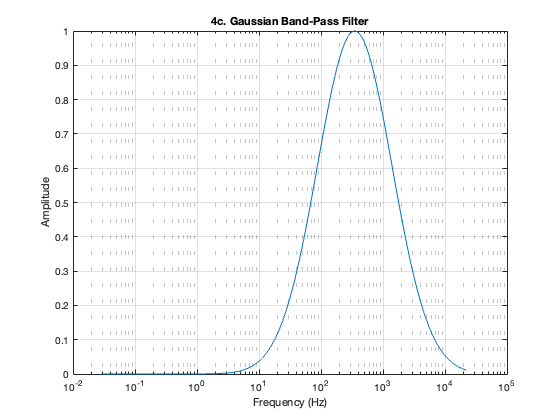
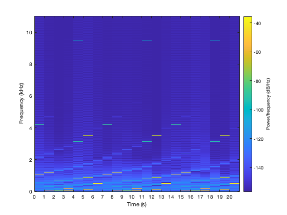
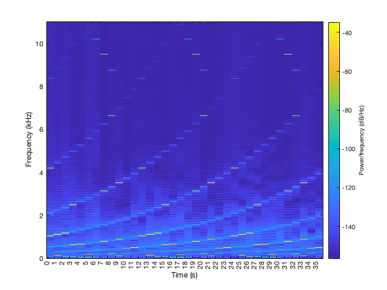

clc;
clear;
close all;
fs = 22050;
N = 22051;
v = 0:(2/(N-1)):2;
g = 1 * exp(-(v-1).^2 / (2 * (0.36^2)));
C1 = key2note(g, 40-36, 1, fs);
C2 = key2note(g, 40-24, 1, fs);
C3 = key2note(g, 40-12, 1, fs);
C4 = key2note(g, 40, 1, fs);
C5 = key2note(g, 40+12, 1, fs);
C6 = key2note(g, 40+24, 1, fs);
C7 = key2note(g, 40+36, 1, fs);
C8 = key2note(g, 40+48, 1, fs);
C9 = key2note(g, 40+60, 1, fs);
Cs = (C1 + C2 + C3 + C4 + C5 + C6 + C7 + C8 + C9) ./ 9;
audiowrite('Cs.wav',Cs,fs);
D1 = key2note(g, 42-36, 1, fs);
D2 = key2note(g, 42-24, 1, fs);
D3 = key2note(g, 42-12, 1, fs);
D4 = key2note(g, 42, 1, fs);
D5 = key2note(g, 42+12, 1, fs);
D6 = key2note(g, 42+24, 1, fs);
D7 = key2note(g, 42+36, 1, fs);
D8 = key2note(g, 42+48, 1, fs);
D9 = key2note(g, 42+60, 1, fs);
Ds = (D1 + D2 + D3 + D4 + D5 + D6 + D7 + D8 + D9) ./ 9;
audiowrite('Ds.wav',Ds,fs);
E1 = key2note(g, 44-36, 1, fs);
E2 = key2note(g, 44-24, 1, fs);
E3 = key2note(g, 44-12, 1, fs);
E4 = key2note(g, 44, 1, fs);
E5 = key2note(g, 44+12, 1, fs);
E6 = key2note(g, 44+24, 1, fs);
E7 = key2note(g, 44+36, 1, fs);
E8 = key2note(g, 44+48, 1, fs);
E9 = key2note(g, 44+60, 1, fs);
Es = (E1 + E2 + E3 + E4 + E5 + E6 + E7 + E8 + E9) ./ 9;
audiowrite('Es.wav',Es,fs);
F1 = key2note(g, 45-36, 1, fs);
F2 = key2note(g, 45-24, 1, fs);
F3 = key2note(g, 45-12, 1, fs);
F4 = key2note(g, 45, 1, fs);
F5 = key2note(g, 45+12, 1, fs);
F6 = key2note(g, 45+24, 1, fs);
F7 = key2note(g, 45+36, 1, fs);
F8 = key2note(g, 45+48, 1, fs);
F9 = key2note(g, 45+60, 1, fs);
Fs = (F1 + F2 + F3 + F4 + F5 + F6 + F7 + F8 + F9) ./ 9;
audiowrite('Fs.wav',Fs,fs);
G1 = key2note(g, 47-36, 1, fs);
G2 = key2note(g, 47-24, 1, fs);
G3 = key2note(g, 47-12, 1, fs);
G4 = key2note(g, 47, 1, fs);
G5 = key2note(g, 47+12, 1, fs);
G6 = key2note(g, 47+24, 1, fs);
G7 = key2note(g, 47+36, 1, fs);
G8 = key2note(g, 47+48, 1, fs);
G9 = key2note(g, 47+60, 1, fs);
Gs = (G1 + G2 + G3 + G4 + G5 + G6 + G7 + G8 + G9) ./ 9;
audiowrite('Gs.wav',Gs,fs);
A0 = key2note(g, 49-48, 1, fs);
A1 = key2note(g, 49-36, 1, fs);
A2 = key2note(g, 49-24, 1, fs);
A3 = key2note(g, 49-12, 1, fs);
A4 = key2note(g, 49, 1, fs);
A5 = key2note(g, 49+12, 1, fs);
A6 = key2note(g, 49+24, 1, fs);
A7 = key2note(g, 49+36, 1, fs);
A8 = key2note(g, 49+48, 1, fs);
As = (A1 + A2 + A3 + A4 + A5 + A6 + A7 + A8 + A0) ./ 9;
audiowrite('As.wav',As,fs);
B0 = key2note(g, 51-48, 1, fs);
B1 = key2note(g, 51-36, 1, fs);
B2 = key2note(g, 51-24, 1, fs);
B3 = key2note(g, 51-12, 1, fs);
B4 = key2note(g, 51, 1, fs);
B5 = key2note(g, 51+12, 1, fs);
B6 = key2note(g, 51+24, 1, fs);
B7 = key2note(g, 51+36, 1, fs);
B8 = key2note(g, 51+48, 1, fs);
Bs = (B1 + B2 + B3 + B4 + B5 + B6 + B7 + B8 + B0) ./ 9;
audiowrite('Bs.wav',Bs,fs);
audio_files = {'Cs.wav', 'Ds.wav', 'Es.wav', 'Fs.wav', 'Gs.wav', 'As.wav', 'Bs.wav'};
combined_audio = [];
for repeat = 1:5
for scale_index = 1:7
[audioData, fs] = audioread(audio_files{scale_index});
combined_audio = [combined_audio; audioData];
end
end
audiowrite('sequence.wav', combined_audio, fs);
function W = gauss_freq(v, mu, o)
W = exp(-((log2(v) - log2(mu)).^2) / (2 * o^2));
end
f_c_filter = 350;
o = 2;
ff = linspace(0, fs, 771785);
W = gauss_freq(ff, f_c_filter, o);
figure(1)
semilogx(ff, W)
title('4c. Gaussian Band-Pass Filter')
xlabel('Frequency (Hz)')
ylabel('Amplitude')
grid on

o = 1.2;
W = gauss_freq(ff, f_c_filter, o);
combined_ft = fft(combined_audio);
filtered_ft = combined_ft .* W';
filteredAudio = real(ifft(filtered_ft));
audiowrite('filtered_sequence.wav', filteredAudio, fs);
spect_3 = filteredAudio(1:463071);
figure(2)
spectrogram(spect_3, 22050, 0, 2048, fs, 'yaxis')
xticks([0:20])

Db1 = key2note(g, 41-36, 1, fs);
Db2 = key2note(g, 41-24, 1, fs);
Db3 = key2note(g, 41-12, 1, fs);
Db4 = key2note(g, 41, 1, fs);
Db5 = key2note(g, 41+12, 1, fs);
Db6 = key2note(g, 41+24, 1, fs);
Db7 = key2note(g, 41+36, 1, fs);
Db8 = key2note(g, 41+48, 1, fs);
Db9 = key2note(g, 41+60, 1, fs);
Dbs = (Db1 + Db2 + Db3 + Db4 + Db5 + Db6 + Db7 + Db8 + Db9) ./ 9;
audiowrite('Dbs.wav',Dbs,fs);
Eb1 = key2note(g, 43-36, 1, fs);
Eb2 = key2note(g, 43-24, 1, fs);
Eb3 = key2note(g, 43-12, 1, fs);
Eb4 = key2note(g, 43, 1, fs);
Eb5 = key2note(g, 43+12, 1, fs);
Eb6 = key2note(g, 43+24, 1, fs);
Eb7 = key2note(g, 43+36, 1, fs);
Eb8 = key2note(g, 43+48, 1, fs);
Eb9 = key2note(g, 43+60, 1, fs);
Ebs = (Eb1 + Eb2 + Eb3 + Eb4 + Eb5 + Eb6 + Eb7 + Eb8 + Eb9) ./ 9;
audiowrite('Ebs.wav',Ebs,fs);
Gb1 = key2note(g, 46-36, 1, fs);
Gb2 = key2note(g, 46-24, 1, fs);
Gb3 = key2note(g, 46-12, 1, fs);
Gb4 = key2note(g, 46, 1, fs);
Gb5 = key2note(g, 46+12, 1, fs);
Gb6 = key2note(g, 46+24, 1, fs);
Gb7 = key2note(g, 46+36, 1, fs);
Gb8 = key2note(g, 46+48, 1, fs);
Gb9 = key2note(g, 46+60, 1, fs);
Gbs = (Gb1 + Gb2 + Gb3 + Gb4 + Gb5 + Gb6 + Gb7 + Gb8 + Gb9) ./ 9;
audiowrite('Gbs.wav',Gbs,fs);
Ab9 = key2note(g, 48+60, 1, fs);
Ab1 = key2note(g, 48-36, 1, fs);
Ab2 = key2note(g, 48-24, 1, fs);
Ab3 = key2note(g, 48-12, 1, fs);
Ab4 = key2note(g, 48, 1, fs);
Ab5 = key2note(g, 48+12, 1, fs);
Ab6 = key2note(g, 48+24, 1, fs);
Ab7 = key2note(g, 48+36, 1, fs);
Ab8 = key2note(g, 48+48, 1, fs);
Abs = (Ab1 + Ab2 + Ab3 + Ab4 + Ab5 + Ab6 + Ab7 + Ab8 + Ab9) ./ 9;
audiowrite('Abs.wav',Abs,fs);
Bb0 = key2note(g, 50-48, 1, fs);
Bb1 = key2note(g, 50-36, 1, fs);
Bb2 = key2note(g, 50-24, 1, fs);
Bb3 = key2note(g, 50-12, 1, fs);
Bb4 = key2note(g, 50, 1, fs);
Bb5 = key2note(g, 50+12, 1, fs);
Bb6 = key2note(g, 50+24, 1, fs);
Bb7 = key2note(g, 50+36, 1, fs);
Bb8 = key2note(g, 50+48, 1, fs);
Bbs = (Bb1 + Bb2 + Bb3 + Bb4 + Bb5 + Bb6 + Bb7 + Bb8 + Bb0) ./ 9;
audiowrite('Bbs.wav',Bbs,fs);
audio_files = {'Cs.wav','Dbs.wav', 'Ds.wav', 'Ebs.wav', 'Es.wav', 'Fs.wav', 'Gbs.wav', 'Gs.wav', 'Abs.wav', 'As.wav', 'Bbs.wav', 'Bs.wav'};
chromAudio = [];
for repeat = 1:3
for scale_index = 1:12
[audioData, fs] = audioread(audio_files{scale_index});
chromAudio = [chromAudio; audioData];
end
end
audiowrite('chromatic.wav', chromAudio, fs);
ff = linspace(0, fs/2, 793836);
o = 1.2;
W = gauss_freq(ff, f_c_filter, o);
chrom_ft = fft(chromAudio);
filtered_ft = chrom_ft .* W';
filteredAudio = real(ifft(filtered_ft));
audiowrite('filtered_chrom.wav', filteredAudio, fs);
figure(3)
spectrogram(filteredAudio, 22050, 0, 2048, fs, 'yaxis')
xticks([0:35])
